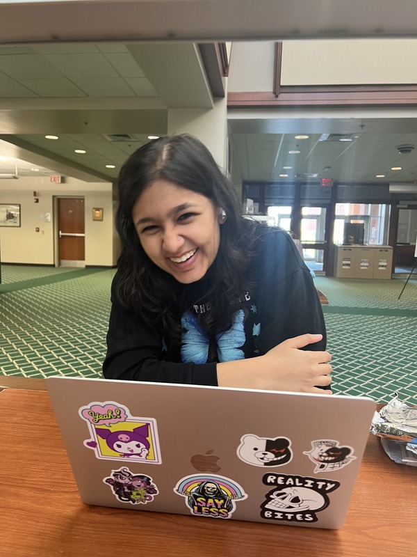

About

This page is built in part to demonstrate work for the Charlotte class ITIS3135 - Front-End Web Application Development for those sections run by Mr. von Briesen. You may find additional information about this course at the course website.
This course seeks to provide students relevant experience in front-end web application development by building multiple websites using a variety of tools and techniques.
Tools Used in This Course
- VS Code
- Emmet within VS Code
- SFTP via Filezilla
- Git via GitHub Desktop and GitHub.com
- Various Browser tools
- The Accumulus Validator
Websites Created in This Course
- A personal home portfolio
- This course site
- A design firm site representing a fictitious/aspirational company
- A Crappy page demonstrating poor design choices
- A whimsical product company
- A student/colleague/peer management tool
- A client project website
All websites created for this course should follow the guidelines and checklists provided by the course website to ensure accessibility, usability, and proper web development practices.